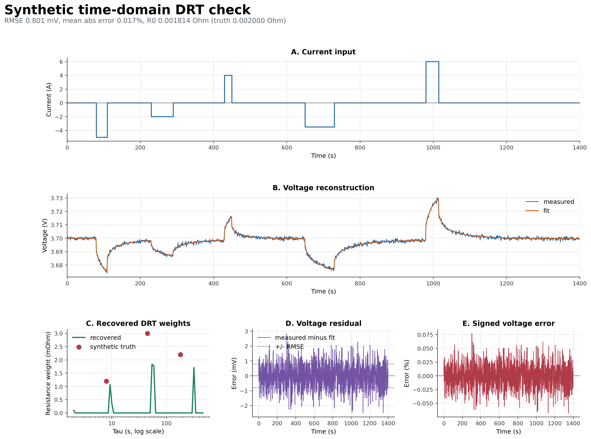
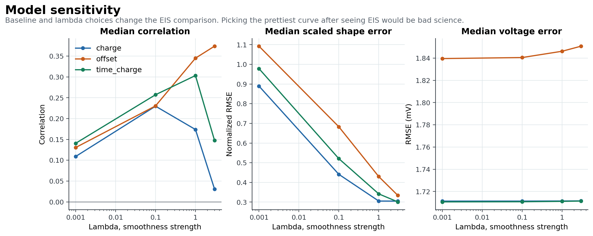

Mini Presentation: Method And Math
Time-Series DRT Pipeline, professor handoff, 2026-06-15
Slide 1: Results
- The method maps current history into a tau-grid response and fits nonnegative DRT-like gamma weights.
- It separates baseline drift, ohmic resistance, and relaxation terms.
- The math and code walkthrough make the assumptions reviewable instead of hidden inside scripts.


Slide 2: Achievements
- Synthetic validation exists before real-data claims.
- Time units, current units, voltage units, tau units, gamma units, and comparison metrics are defined.
- The code walkthrough maps the main scripts in execution order.
- The pre-declared model rule blocks tuning lambda after seeing EIS agreement.
Slide 3: Open Issues
- Nonnegative smooth gamma is a modeling assumption, not proof of true DRT physics.
- Baseline and lambda choices still affect the comparison.
- The current method may fit voltage while recovering a weak or wrong gamma shape.
- EIS-derived reference settings still need professor-level agreement.
Slide 4: Roadmap
- Lock the baseline and lambda rule before broader validation.
- Compare broad tau-band areas, not only exact peak locations.
- Confirm the EIS preprocessing and DRT reference method.
- Add repeated-pulse or repeated-case stability checks before claiming robustness.